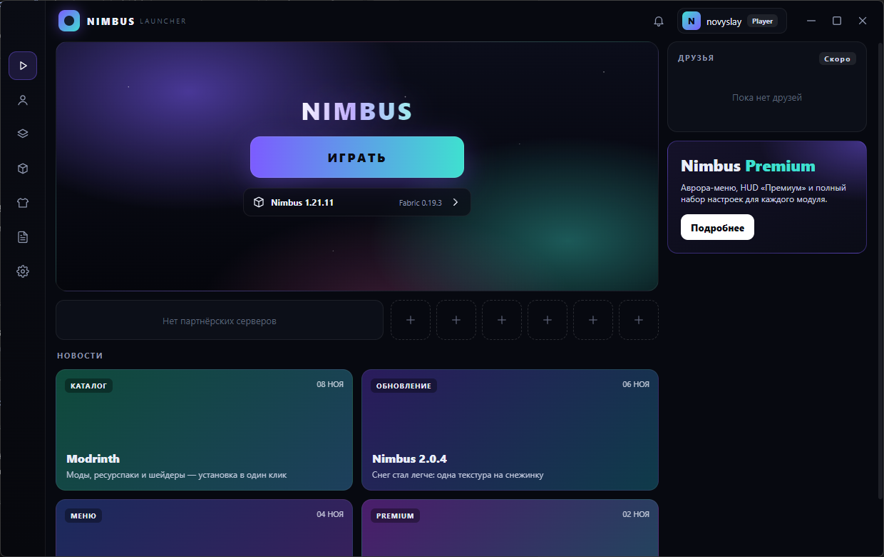
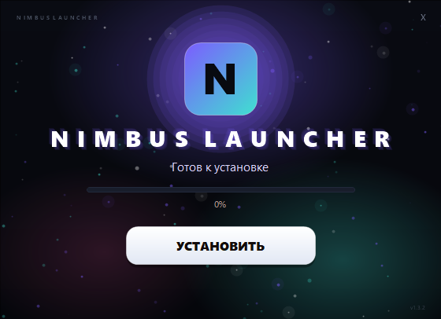
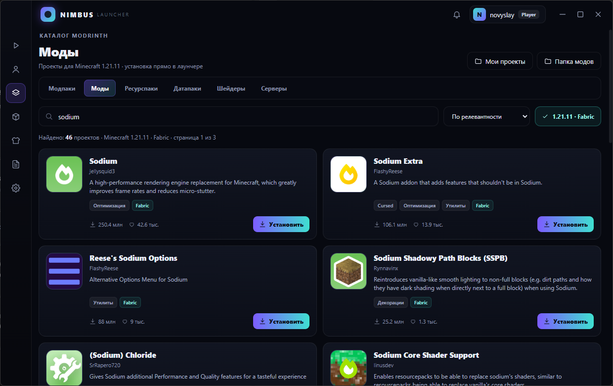

Каталог Modrinth
Моды, модпаки, ресурспаки, датапаки и шейдеры. Поиск, сортировка, фильтр под 1.21.11 и установка в один клик.
Nimbus — лаунчер и клиент в одном. Аккаунт с любого ПК, каталог Modrinth, автоматическая установка Minecraft и Fabric, тёмный установщик и меню на Right Shift.


Лаунчер решает рутину, клиент отвечает за картинку. Никаких десятков установщиков и ручной сборки.
Моды, модпаки, ресурспаки, датапаки и шейдеры. Поиск, сортировка, фильтр под 1.21.11 и установка в один клик.
Вход по нику и паролю без почты. Аккаунт живёт на сервере, поэтому работает на любом компьютере с лаунчером.
Клиент, библиотеки, ресурсы и Fabric Loader 0.20.1 скачиваются автоматически. Прогресс и понятные ошибки — на экране.
Right Shift открывает стеклянное меню: 26 модулей, HUD, темы и настройки, которые применяются сразу и сохраняются сами.
Тёмное окно с логотипом, прогрессом и кнопкой «Запустить». Ставится в папку пользователя, без прав администратора.
Отдельные логи лаунчера и Minecraft, обновление модов, удаление проектов и восстановление игры без потери аккаунта.
Не нужно открывать браузер и искать совместимую версию. Nimbus показывает только то, что подходит к твоей сборке.

Категории, модули и настройки в одном стеклянном окне. Всё, что меняется, сразу видно в игре.
Нажми на цвет — сайт перекрасится так же, как меню в игре.
Установщик — самый простой путь. Portable и отдельный jar — для тех, кто любит контроль.
Windows 10/11 · 1.3.2 · 81,9 МБ
8BC80557E18E69D176DEDA5091A119B5417E3C6166BC3781CB6FC8FBAE1781AWindows x64 · 1.3.2 · 112,5 МБ
CD0A7726CBB5669212EAA490FE877E9225AEE020535E3FE7BF1B2CF8F0F2E31CMinecraft 1.21.11 · Fabric · 321 КБ
648BDBF2BED8AB65503F18584477B5BAB2E6A421D5D98E5757A1C3A1B5F12499Контрольные суммы всех файлов: SHA256SUMS.txt
Загрузи NimbusLauncher-Setup-1.3.2.exe. Права администратора не нужны.
Нажми «Установить», затем «Запустить». Ярлыки появятся на рабочем столе и в «Пуске».
Введи ник и пароль, нажми «Играть». Minecraft 1.21.11, Fabric и моды скачаются сами.
Зарегистрируйся на сервере Nimbus и входи с любого компьютера. Ник, пароль и UUID игрока — без почты и лишних шагов.
Новый фирменный установщик с прогрессом и кнопкой запуска. Установка без прав администратора, ярлыки и удаление. Fabric Loader 0.20.1, удаление проектов и восстановление WalksyLib.
Панель Modrinth: 20 000+ проектов, поиск, сортировка, вкладки, карточки, установка модов и зависимостей, «Мои проекты».
Запуск Minecraft 1.21.11 и Fabric, меню логов, прогресс, состояния «Скачивание Nimbus / Запущено», первый установщик.
Аврора-меню на Right Shift, HUD Premium, 26 модулей, ESP, снежинки, следы, темы и FPS Boost.
Нет. Лаунчер сам скачает Minecraft 1.21.11, Fabric и библиотеки в отдельную папку. Если игра уже установлена, файлы переиспользуются.
Да, Java 21 или новее. Лаунчер ищет её в JAVA_HOME, PATH, Adoptium и TLauncher. Если Java нет — покажет понятную ошибку.
На сервере аккаунтов Nimbus. Укажи его адрес в настройках лаунчера — и вход будет работать на другом ПК. Пароль хранится в виде scrypt-хэша.
Любые проекты Modrinth для Minecraft 1.21.11 и Fabric. Фильтр включён по умолчанию, обязательные зависимости скачиваются автоматически.
Нет. Он ставит лаунчер в %LOCALAPPDATA%\Programs\Nimbus Launcher, создаёт ярлыки и запись в «Установленных приложениях» для текущего пользователя.
Установщик не подписан. Нажми «Подробнее» → «Выполнить всё равно». Это стандартное предупреждение SmartScreen для новых сборок.
«Параметры → Приложения → Nimbus Launcher → Удалить» или ярлык «Удалить Nimbus Launcher». Аккаунт, логи и скачанный Minecraft в %APPDATA% останутся.